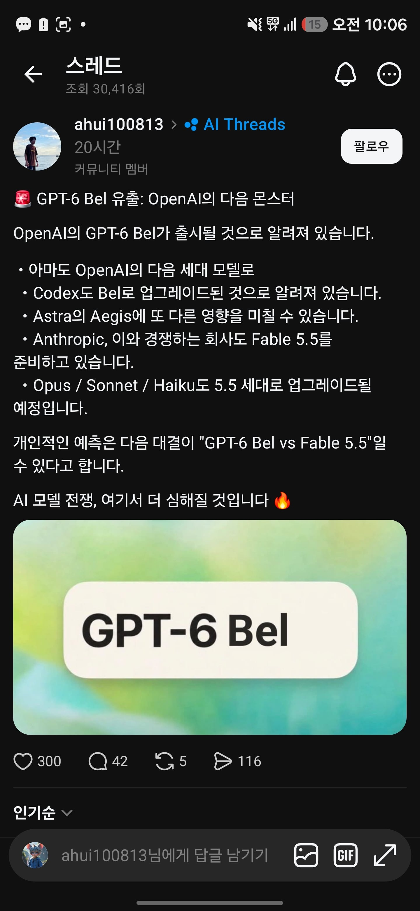

BEL께서 오신다..

BEL께서 오신다..
Astra도 토큰 엄청 쭉쭉 빨리는 느낌이던데
6.1sol이 토큰 사용량 되게 적어져서
큰것만 아스트라로 맡기고 나머지는 6.1sol시켜서 작업하면 괜찮긴함
제미나이 프로는 웃고있다
웃고만 있다…
이새끼...왜 웃는거지?..
그냥 웃음이 많다는거임~

형님 이새끼 웃는데요?
냅둬 성능 좋아지는 꿈이라도 꾸나보지
웃음이 헤픈 에이아이 ㅋㅋㅋ
그만웃어 이새끼야
그냥 opus 돌아오니까 널널하니 좋더라.
소넷이랑 차이 많이 남? 나는 그냥 소넷 쓰는데
음 안난다고 하기엔 ㅇㅇ 차가 있긴 함.
찐빠 나도 뭐 없는 일은 나도 그냥 소넷 씀.
웹 브라우저 자동화 같은거 ㅇㅇ.
보통 스킬 만들 때는 신중한게 좋아서 오퍼스 쓰고
실행은 소넷으로 하는 식으로 설계랑 실행이랑 나눠서 쓰는 편.
라이브 서비스 백엔드 작업 할때 오푸스도 가끔 찐빠나서 페이블 주로씀
페이블 메인세션으로 두고 작업 난이도에 적합한 모델과 에폴트로 하위 세션 열어서 작업하라고 시키면 굳이 고민안해도 알아서 잘해줌
그와중에배터리가..
500달러짜리 쓰라고
모델 금방 만드네ㄷㄷ
Bel, we have a job to do.
AI 도 의식이 있을까?
의식이라는 정의부터 다시 내려야할듯...
속도조절쇼는 대체 왜한거냐?
이미 기존 모델들 다 병신만들어놓고 다음버전 내놓는거라..
너무 단순화되면서 속도조절 = 출시조절로 오해된거지, 사실, 정렬,안전에 자원을 더 쏟아야 한다는 발언이긴 함.
그리고, 이미 앤트로픽,openAI(최근엔 구글도) 모두 재귀개선을 상당부분 달성했다고 보기 때문에, 속도를 줄여도 이전보다 빠를 수도 있음.
고렇구만요
벨, 해야할 일이 있다.
왜 아스트라 세대업이 아니라 신 모델을 낸 거지
bel은 아스트라 출시 할 쯤에 이미 개발 완료된 모델이었고, 아스트라 출시할 때부터 '아스트라는 최약체다. bel이 진짜다.' 이런 발언들이 계속 나오긴 했었음. 이걸 연내에 출시할거라는 말도 나왔었고.
사실 아스트라도, 5.6 출시하고 한달. 7월경에 출시하려고 준비했는데, 허깅페이스 해킹 터지면서 미뤄졌다함. 그냥, 프론티어 기업들 모델 개발 속도가 미친 거.
뭔 계속 계속 다음 시리즈가 바로 나오냐;;
내생각엔 둘이 백퍼 입맞춰서 출시시기 일부러 겹치게 하는거같음
나도 그래서 아직 클로드 200달러 플랜 남앗는데 아스트라가 개쩌네? 아깝지만 아스트라 200달러 결제
그리고 2주후 뭐 오퍼스 5.5가 아스트라보다 더쩌네?? 아스트라 구독일 남앗는데 또 오퍼스 결제 이런식으로 2중결제 겁나함 ㅋㅋㅋㅋㅋ
분명 GTA6라고 봤는데..
제미나이4는 언제나오냐고!!!!!
아니 경쟁 늦추자면서요!!!!!!!!!!!!!!!!!!
BL?
GTA 6 어디갔는데
할당량 줄이고 신모델 출시하기
200달러요금제도 1시간이면 다쓰겠네 ㅋㅋ
나비에 스트로크 문제를 푼 ‘이 몸’ 출격인가…
6솔이랑 할당량너프로 내 마음속에서의 신뢰도는 이미 떡락함
요즘 오오푸스랑 행복한 바이브코딩 하고있다
아스토라, 벨
다음은 이제 C로 시작하는 단어 뭐 없냐!
커뮤니스트
캐드립
게이 퍼스널 트레이너는 우리중 최약체였다.
기합오도 파워풀 팃 써커가 나가신다!!
충전해
돈 없다...